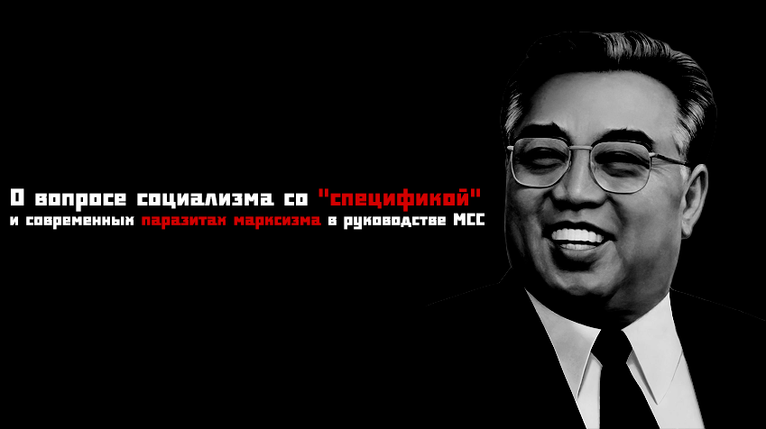
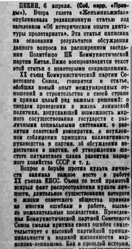

О вопросе социализма со «спецификой» и современных паразитах марксизма в руководстве МСС

Здравия товарищи! Сегодня поговорим о маоизме и чучхеизме, в том числе о том, как к этому относится нынешнее руководство МСС.
Содержание:
Идеи Мао Цзедуна
КНДР и идеология чучхе
Ревизионизм руководства МСС
Идеи Мао Цзедуна
Начнём с Китая, после выигранной гражданской войны, Мао не собирался устанавливать диктатуру пролетариата и строить социализм, вместо этого он заявил об установлении в стране «новой демократии» — демократии, которая отвергает переход к социализму, сотрудничает с врагами пролетариата, устанавливает парламентаризм.
«Что же такое новодемократическое конституционное правление? Это — диктатура союза нескольких революционных классов, направленная против национальных предателей и реакционеров. Некогда было сказано: «Есть еда — пусть едят все». Я думаю, что этими словами можно образно охарактеризовать и новую демократию. Если верно, что «есть должны все», то и власть не должна присваиваться одной партией, одной группой, одним классом» — Мао Цзэдун, «За новодемократическое конституционное правление», февраль 1940.
«Некоторые выражают сомнение: не создадут ли коммунисты, как только они одержат верх, диктатуру пролетариата и однопартийную систему по примеру России? Мы отвечаем на это, что между новодемократическим государством союза нескольких демократических классов и социалистическим государством пролетарской диктатуры существует принципиальное различие. Конечно, отстаиваемый нами новодемократический строй создаётся под руководством пролетариата, под руководством коммунистической партии. Однако в Китае в течение всего периода новой демократии невозможен, а потому и не должен иметь места режим диктатуры одного класса и монопольного положения одной партии в правительстве. Мы не имеем никакого основания отказываться от сотрудничества с какой бы то ни было партией, общественной группой или отдельными лицами, если только они стоят на позициях сотрудничества с коммунистической партией и не занимают враждебной к ней позиции. (…) Историческое развитие Китая на современном этапе породит и соответствующий строй. В течение длительного времени в Китае будет существовать своеобразная форма государства и своеобразная форма организации власти, совершенно необходимая и закономерная для нас и в то же время отличная от строя в России, а именно новая демократия.» — Мао Цзэдун, «О коалиционном правительстве», апрель 1945.
Сразу задаёшься вполне логичным вопросом: неужели революционных классов несколько? Посмотрим что об этом говорили классики:
«Из всех классов, которые противостоят теперь буржуазии, только пролетариат представляет собой действительно революционный класс. Все прочие классы приходят в упадок и уничтожаются с развитием крупной промышленности, пролетариат же есть ее собственный продукт». — Карл Маркс, «Манифест коммунистической партии».
И это не абы что, а Манифест! Самая базовая работа, которую изучают первым делом коммунисты-новобранцы, в том числе. Но, у Мао революционных классов два и более... О каком втором классе идет речь? Следует предположить, что о крестьянстве (уж точно не о буржуазии шла речь), которое являлось угнетаемым классом при феодализме. Ведь партизанская война в Китае, шла из деревни в город, а не наоборот. Там, как и в Российской Империи, крестьянство составляло большую часть населения. В конце концов, Китай перешёл из феодальной формации, в переходную формацию от капитализма к социализму (диктатура пролетариата). Здесь, Маркс продолжает:
«Средние сословия: мелкий промышленник, мелкий торговец, ремесленник и крестьянин - все они борются с буржуазией для того, чтобы спасти свое существование от гибели, как средних сословий. Они, следовательно, не революционны, а консервативны. Даже более, они реакционны: они стремятся повернуть назад колесо истории. Если они революционны, то постольку, поскольку им предстоит переход в ряды пролетариата, поскольку они защищают не свои настоящие, а свои будущие интересы, поскольку они покидают свою собственную точку зрения для того, чтобы встать на точку зрения пролетариата».
О реакционности крестьянства говорил и Ленин:
«О крестьянстве, этой гигантской, все подавляющие свои численностью, массе населения, нечего и говорить. Его „программа-максимум”, его конечные цели не выходит за пределы капитализма, который ещё шире и пышнее развернулся бы при переходе всей этой земли ко всему крестьянству и ко всему народу. Крестьянская революция есть в настоящее время буржуазная революция, — как бы ни „оскорбляли” эти слова сентиментальное ухо сентиментальных рыцарей нашего мещанского социализма». — В. И. Ленин, «Социалистическая партия и беспартийная революционность» — ПСС, 12 т., 135 стр.
Также, прослеживается забавное высказывание Мао о том, что «власть не должна присваиваться одним классом». Его риторика схожа на высказывания Бакунина, по версии которого, пролетариат после взятия власти становился бы новой аристократией и т.д. Однако, лучшим примером того, что Бакунин не то что ошибся, а ошибся в корне и полностью, будет СССР, с его «Смычкой города и деревни» — движения по воплощению в жизнь экономического, политического и культурного союза передового рабочего класса и крестьянства России. Сделано это было от того, что пролетариат, в нашем случае заводские рабочие, не могли существовать без крестьянства. Данное высказывание, как и идеи анархизма — чистый идеализм. Как государство нельзя отменить в ту же минуту, после революции, так и осуществление «новодемократического» правления, а точнее о его элементах, которые описывает Мао, об отсутствии диктатуры класса, нельзя отменить также быстро. Коммунистическая формация даëт такую возможность, так как отмена диктатуры класса равносильно отмене государства как такового. Но, прежде чем он наступит, конкретное государство, и мир в целом, должны пережить две переходные стадии (от капитализма к диктатуре пролетариата и от социализма к коммунизму), которые достигаются путëм диктатуры класса, а именно — пролетариата.
Но более того, Мао таким образом критикует не только Ленина, но и Сталина, его, причём, более подробно, в своей работе «Критика советской экономики», где он критикует Сталина и его работу «Экономические проблемы социализма в СССР», после прочтения которой, складывается ощущение что Мао, наверное, даже «Критику Готской программы» Маркса и «Государство и революцию» Ленина не читал, и не знает социалистический принцип распределения. Проблемы «один человек работает лучше, и соответственно получает больше другого», будут неизбежны в низшей стадии коммунистического общества, и эти противоречия будут преодолены с полным построением коммунистического общества.
К слову, глава МСС, аббревиатура которой дословно читается как «Молодëжный Союз Сталинцев» — Павел Ламанов, также известный как @ComradeCommunist , считает что любая критика Мао в адрес Сталина объективна, но глупо так думать, хотя бы в сравнении с тем, какие цитаты работ Мао мы приводили ранее, каких он был идей и взглядов. Хотя, подумаешь тоже, вы сталинцы или кто?)
А дальнейшие выходки Мао, вы и сами, наверняка знаете. Смерть Сталина, ХХ съезд ЦК КПСС, где хрущёвщина положила начало развалу социалистического лагеря, в сети много статей, где описывают Мао, как чуть ли не единственного ленинца, не предавшего рабочий класс, а в итоге «истинный марксист» Мао Цзедун повёл страну на сближение с Америкой и другими антикоммунистическими державами (подробнее о теории 3 миров https://m.vk.com/@alliance_of_red_front_fighters-kitaisko-koreiskaya-revizionistskaya-vneshnyaya-politika-v-1).
Маоисты, которые боролись против хрущëвского ревизионизма, начали поддерживать терроризм в Европе, настроенный против СССР, а в конце закончили тем, что подружились с США, поскольку у них, тоже было введено в оборот такое глупое понятие как «менее реакционный империализм».

— Об историческом опыте диктатуры пролетариата, 1956 год.
КНДР и идеология чучхе.
О Мао Цзэдуне и маоизме мы поговорили достаточно, поэтому переходим к чучхе. Для начала небольшое уточнение: обычно, имея в виду государственную идеологию КНДР, мы говорим «чучхе». Однако более уместным для нас было бы употреблять термин «кимирсенизм-кимчениризм». Именно так это сейчас закреплено в конституции КНДР и трудовой партии Кореи. Чучхе — это только часть государственной идеологии КНДР. Идеи чучхе являются её неотъемлемой частью, но при этом не главенствующей и не единственной.
Характеристика КНДР как государство строящее коммунизм давно устарела. Дело не только в том, что в Северной Корее без особого шума идëт приватизация, но и в том, что КНДР официально не считает себя государством, основанных на принципах марксизма-ленинизма, хоть и подчеркивает «верность» социализму. Впрочем, так поступали и поступают другие страны «процветающего» ревизионизма, социал-империализма в том числе, включая Китай, который, однако, настаивает на марксистско-ленинской сути своего «социализма» с «китайской спецификой». Так и КНДР позиционирует себя «страной социализма с корейской спецификой». А как звучит то! Прикрывать свой ревизионизм таким безобидным понятием! Например, на одном из съездов Трудовой Партии Кореи (ТПК) еë идеологическая задача была определена так:
«С высоко поднятым знаменем кимирсенизма-кимчениризма до конца свершить дело социализма, революционное дело чучхе».
Конечно, когда в 1948 году была провозглашена Корейская Народно-Демократическая Республика никакой неопределенности по поводу ее идеологической ориентации не существовало и ни о каком кимирсенизме речи не шло. ТПК в своей программе прямо указывала, что исповедует марксизм-ленинизм. Эта ситуация отражала и политическую реальность: КНДР была создана при активной поддержке СССР. Однако Ким Ир Сен, полевой командир корейских партизан в Маньчжурии, ставший в 1942-м офицером Красной армии, не был доволен таким положением вещей. И сам он, и его окружение были не только (а возможно и не столько) коммунистами, сколько националистами. Ведь Корейский полуостров долгое время являлся колонией Японской Империи довольно долгий срок. В юности уходили в партизаны, рисковали жизнью и шли на немалые жертвы, в основном, не ради идеи социализма, коммунизма, а во имя мечты о Новой Корее — сильном, процветающем и свободном от иностранного диктата государстве. Ведь та партизанская война была являлась национально-освободительной. Но стоит отдать должное, ведь национально-освободительные войны не являются реакционными, а наоборот, прогрессивными, исходя из права наций на самоопределение.
В начале 1970-х северокорейское руководство предприняло попытку порвать с марксистско-ленинским идеологическим наследием. На первых порах «идеи чучхе» подавались как местный вариант марксизма, или, если цитировать Конституцию КНДР 1972 года, «творческое приложение марксизма-ленинизма к корейской действительности». Но в начале 1970-х северокорейские идеологи уже заявляли, что «идеи чучхе» не просто вариант марксизма, а новая и универсальная прогрессивная теория. Ким Чен Ир тогда подчеркивал, что между «идеями чучхе» и марксизмом существует принципиальная разница.
Впрочем, эта линия не получила своего развития и в конце 1970-х была свернута, так что в более поздние периоды отношения между «идеями чучхе» и марксизмом-ленинизмом остались не совсем проясненными. Скорее всего, подобный откат был связан с тем, что радикальные заявления могли негативно повлиять на отношения Пхеньяна с другими странами соц. блока. Тем не менее, с конца 1960-х количество упоминаний о марксизме-ленинизме в северокорейской официальной печати неуклонно сокращалось. Большинство работ Маркса и Ленина в КНДР убрали в спецхран, оставив для широкого пользования ограниченный набор соответствующим образом отредактированных текстов бывших «основоположников».
Заранее говорим, что "социализм с китайской спецификой", как и его любое "творческое развитие", ведёт к созданию нового ядра догм, ревизионистского ядра, которое в свою очередь ведёт к буржуазному откату.
Вы говорите о каком-то китаизированном социализме, такого нет в природе. Нет социализма русского, английского, французского, немецкого, итальянского, как нет и китайского социализма. Есть один социализм марксистско-ленинский. Другое дело, что при построении социализма необходимо обязательно учитывать специфические особенности той или иной страны. Но социализм – это наука, обязательно имеющая, как и всякая наука, общие закономерности, и стоит лишь отойти от них, как построение социализма обречено на неизбежную неудачу. - Сталин, Том 18, с. 130.
Всë большую роль в северокорейской идеологии стал играть корейский традиционный этнический национализм, восходящий к началу XX века.
«...В борьбе за сохранение и воплощение жизнь национального характера исключительно важное значение имеет идея о первородстве корейской нации» — Ким Чен Ир, «О правильном понимании национализма».
Статья 3 Конституции, которая определяла «идеи чучхе» в качестве государственной идеологии, была отредактирована: теперь в ней нет упоминаний о связи чучхе с марксизмом-ленинизмом. Весной 2009 года в ходе очередных изменений из Конституции КНДР удалили все упоминания о коммунизме: в статье 59, где раньше речь шла о «формировании нового коммунистического человека», теперь говорится о «формировании нового чучхейского человека».
КНДР не разоблачает ревизионизм, отрицает классовую борьбу, затушëвывала в свое время классовую борьбу во Вьетнаме и Китае, отказываясь от противоречий с последним чтобы иметь партнёрство. КНДР отказалась от классовых противоречий. А что этот отказ значит? В чëм проявляется? Отказ противоречий означает не осуждение Китая за вторжение во Вьетнам, торговля с ним и обмен идеологическими любезностями, признание реформистской клики Сяопина марксистами-ленинцами, как и Горбачëва и Чаушеску, признание еврокоммунизма во время разговора с последним.
«Эти новые перемены, которые сегодня происходят в Советском Союзе, немыслимы в отрыве от энергичной деятельности стойкого марксиста-ленинца, талантливого политического деятеля, товарища Горбачёва Михаила Сергеевича» — Ким Ир Сен, О перестройке в СССР. «Избранные произведения». Политиздат, Москва, 1987, стр.119.
Отношения КНДР с Китаем есть проявление «гибкой внешней политики». Между прочим, Китай тоже проводил такую «гибкую внешнюю политику» сотрудничества с США. Суть этой политики заключается в том, чтобы дружить до тех пор пока империализм не усилится, и за счëт «менее реакционных» режимов улучшать свою экономику, ВПК, и прочее, как делал Китай, до тех пор пока совместные интересы не пропадут. В чëм выражается подобная политика КНДР сейчас? В том, что КНДР поддерживает российские действия в Украине, затушëвывает классовую борьбу в России, игнорирует обнищание масс и сотрудничает с российским капиталом, игнорируя эти самые массы. КНДР не занимается поддержкой международного пролетариата в борьбе. Можно сказать что КНДР маленькая страна, но это не будет оправданием, ведь, в своё время это умудрилась делать НСРА (социалистическая Албания). Ленин говорил, что всякий отказ от борьбы с оппортунизмом, есть борьба с империализмом лишь на словах. Всякая внешняя политика социалистической страны базируется на интересах международного пролетариата. Даже словами про социализм в отдельно взято стране ты этого не отменишь, поскольку так или иначе организуя связи с капиталистическими государствами, Сталинский СССР преследовал пролетарские цели, а КНДР оппортунистические и гегемонические.
Ещё один пример "следования" руководства КНДР классовым интересам продемонстрировано в словах Ким Ир Сена:
«В сельскохозяйственной кооперации принцип добровольности применялся не только к среднему крестьянству, но и ко всем слоям сельского населения, включая богатых крестьян.» (Ким Ир Сен; Отчёт о работе Центрального Комитета на 6-м съезде Трудовой партии Кореи, 9 ноября 1961 года).
В этой небольшой цитате Ким Ир Сен продвигает политику кулачества.
Теперь скажем пару слов о Чонгук и демократическом централизме в понимании Ким Ир Сена:
«45. Что означает революционный воинский дух?Революционный воинский дух – это высокий революционный дух армии, основным содержанием которого является дух самоотверженной защиты вождя, дух самоотверженного претворения в жизнь его воли и дух героического самопожертвования.
49. Что подразумевается под духом самоотверженного претворения в жизнь воли вождя? Этот дух требует принять идеи и линию, приказы и распоряжения партии и вождя за самые справедливые и претворять их в жизнь безоговорочно, без малейших уступок.
53. Как создан революционный воинский дух? Революционный воинский дух создан во второй половине 90-х годов прошлого века воинами – участниками строительства Анбёнской ГЭС «Молодежная» в восточной части Кореи. Тогда это были невиданные по объему и условиям строительные работы, к тому же страна испытывала неимоверные экономические трудности из-за того, что империалисты, используя развал ряда социалистических стран, сосредоточивали жесточайшую экономическую блокаду в Корее, причем обрушивались на нее одно за другим стихийные бедствия, и строительные работы на деле же были невозможными. Но воины начали и в конце концов завершили строительство электростанции, проникнутые духом самоотверженной защиты своего Верховного Главнокомандующего, самоотверженного претворения в жизнь его приказаний и распоряжений, духом героического пожертвования своей жизнью за Родину, народ и товарищей. Ким Чен Ир назвал этот дух воинов «революционным воинским духом» и указал на необходимость всему обществу последовать их примеру». — «Вопросы и ответы по идеям Сонгун». Пхеньян, ИЛИЯ, 101 чучхе (2012).
Самое главное нарушение демократического централизма состоит в том, что вождей не должно быть вообще. Смешивать партию с армией — ревизионистская идея. Только ревизионисты мобилизуют армию для партийной борьбы и прочего, это марксисты-ленинцы раскритиковали. Это метод, практикованный Хрущевым в отношении Берии, Мао Цзэдуна также им пользовался, и метод партийной борьбы ревизионистов в Северной Корее. Но ни в ленинско-сталинском СССР, ни в социалистической Албании он не применялся.
После распада социалистического блока, КНДР, как и другие страны, которые хоть как то сохранили остатки марксизма-ленинизма, на самом деле, просто проводили контрреволюционные и буржуазные реформы более постепенно и медленно, в отличие от стран блока ОВД или Югославии, которые погибли в мучениях и отголоски этого распада слышны до сих пор. КНДР также провела рыночные реформы, но был ли у неë другой выход? Нет, так как маленькие социалистические страны (вроде КНДР) не могут в нынешних условиях, после распада соцблока, держаться на плаву сами, их революцию быстро уничтожат стоящий над этой страной другой империалист (например, вторжение в страну блоком НАТО). Для того чтобы удержать советский режим сейчас, нужно чтобы революция произошла в стране с ресурсами или ядерным оружием, бывают и исключения, да. Например, в Бразилии, ЮАР, Венесуэле приходящие к власти «рабочие» партии не осуществляли полного отхода от капитализма, не были такими радикальными, потому что их могли просто смять. А в КНДР, страну которая после того как был разрушен соцблок также вынужденно провела рыночные реформы, но уже для сохранения режима, так как на путь ревизионизма и постепенной стагнации к буржуазному строю, КНДР начала вставать ещё в 70-х. Поэтому, на тот момент строй КНДР нельзя было в полном смысле слова назвать социалистическим. Руководство КНДР прекрасно понимало, что если ничего не предпринимать, то повторится опыт ГДР. И для сохранения того же режима появилась нужда в ядерном оружии, в том числе. Как итог имеем раздробленность на корейском полуострове. Она состоит из двух капиталистических или полукапиталистических стран, которые не являются в полном смысле слова экономически независимы, и существование каждой поддерживает иностранный рынок, империалист стоящий именно над ними. У Южной Кореи — США, у КНДР — Китай.
Ревизионизм руководства МСС
Пора ответить на самый главный вопрос. Причём тут нынешнее руководство МСС? Павел Ламанов, также известный как @ComradeCommunist, глава МСС поддерживает Мао Цзэдуна, КНДР и чучхе, говоря о неком его развитии, и что это задача МСС. При этом, он сам признавался что даже не читал чучхе, зато смотрел видео....
Также он поддерживает империалистическую войну на Украине, выступая на стороне России, используя аргумент, что РФ «менее реакционная». Капитализм реакционен уже больше 100 лет. Не существует «менее реакционного» капитализма. Современный капитализм давно достиг своей высшей империалистической стадии. Это относится к той же серии, про «менее реакционный социал-империализм». Да и в последнее время деятельность Павла в Политбюро сомнительна и не продуктивна.
Ещё один представитель ревизионистских идей — Teamaster. Данный товарищ поддерживает "Марксиста-Лениниста" во всем, в том числе считает, что те, кто против империалистических войн, а также может трезво и объективно говорить о них — либералы. Позиция о авторитаризме и его присутствии не только в Украине, но и в России, а также других "демократических" странах, идентична позиции Павла.
Как у Ламанова, так и у Teamaster-а абсолютна теоретическая безграмотность. Они понятия не имеют за что выступают и борются. Поддерживают тех людей, которые критиковали Сталина, но название остаётся такое же "Молодёжный Союз Сталинцев". Товарищи, это не сталинцы, а сталинисты. Принципиальное различие первых от вторых заключается в том, что сталинисты по своей сущности были и до сих пор являются самыми настоящими троцкистами. Дело в том, что троцкизм - это оппортунистическое движение, без каких-либо чётких идеологических рамок, которые бы с этим словом были неразрывно связаны. Благодаря применению одобренной самим Троцким тактики энтризма, определить чёткие идеологические рамки троцкизма стало в принципе невозможно. Подмена классовой борьбы на межличностную — основной вариант троцкистского оппортунизма. Упомянутая тактика, помогает троцкистам скрывать кто они на самом деле, и прикидываться, кем угодно, от либералов до анархистов или даже «сталинистов», за кого себя и выдают "ламановцы". А я напоминаю, что Teamaster является главой отдела обучения. Отдела, который отвечает за полит. грамотность, знание теории членов организации. Это ни что иное, как намеренное паразитирование на марксизме! Не говоря уже о том, что сам Ламанов добрался до своей нынешней должности всего за несколько недель, получив такую власть по воле случая. МСС переживает тяжёлые времена, и мы не видим другого выхода кроме смены власти в МСС, ликвидацию главных вредителей. В организации ЗАСТОЙ. Очень маленький приток участников, связанный как со скудностью самой организации на данном этапе, который подпитывается мещанством руководства, так и плохо организованной агитационной работой. Революционный Комитет МСС выступает за реформирование организации и призывает всех солидарных участников бороться против Ламанова и его хунты! Если вы считаете себя настоящими марксистами-ленинистами, выступаете против ревизионизма, переходите на нашу сторону — антиревизионисткого сопротивления. Переходите на наш канал @workerpower1917 в описании ссылка на наш чат. Ждём тебя, товарищ.